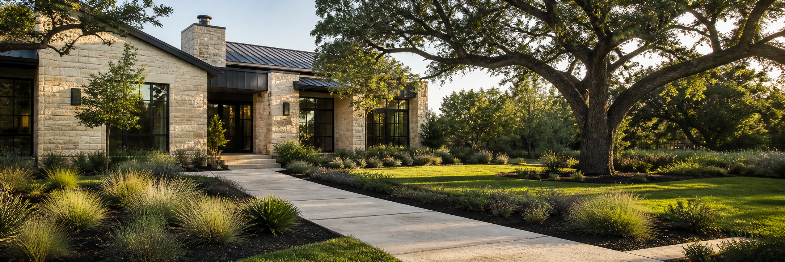

Our family story
Raised on the land.
Built to serve Austin.
Our approach comes from generations of caring for the land: understand what the property needs, solve problems practically, and leave every place better than we found it.

01
Where we come from
Guatemala.
Zacatecas.
Central Texas.
Our family’s roots run through Guatemala and Sombrerete, Zacatecas—places where growing food, caring for trees, and understanding the seasons were part of everyday life.
That farm background taught us patience, resourcefulness, and respect for the work beneath the surface: healthy soil, correct drainage, strong structure, and consistent care.

Why we created this service
Landscape work should feel straightforward.
After decades of helping family, neighbors, and homeowners with their properties, we saw the same need again and again: one dependable crew that could listen carefully and handle both maintenance and larger outdoor projects.
We created Landscaping Service to bring that family approach to Austin and surrounding communities—direct communication, practical recommendations, clear quotes, and pride in a clean finish.
How we work
What you can expect.
A practical plan before the work, careful execution during it, and a clean property when it is done.
- 01
Listen first
We start with what is not working, how you use the property, and the result you want.
- 02
Quote the real scope
Pricing reflects the work, materials, access, and time, so recommendations stay practical.
- 03
Leave it ready
We manage the details, clean the site, and leave the property ready to use.
From our family to your property